WHITE PAPER
mmRISC-2
仕様・RTL・検証から、Arty A7-100T 上の Linux 起動まで
圓山 宗智https://github.com/munetomo-maruyama/mmRISC-2
要旨
本書は、Anthropic の AI コーディングエージェント Claude Code に 64-bit RISC-V CPU(RV64GC)を設計させ、FPGA ボード Digilent Arty A7-100T の上で Linux を起動させた mmRISC-2 プロジェクトの記録である。仕様書、RTL、テストベンチと検証、スクリプト、日英の文書はすべて Claude Code が書き、筆者は目標の設定、提案からの選択、Vivado と実機の操作を受け持った。
着手から 12 日 で自作 CPU 上の Linux が SD カードから BusyBox まで起動し、30 日 で Rev.01(L2 キャッシュ、パイプライン化した FPU、Zba / Zbb / Zbs / Zbc / Zicond / Zicboz、CoreMark 3.025 /MHz、120 分の負荷試験 PASS)に至った。本書では、進め方、仕様、開発の経緯、手戻りと検証の改善、AI による自動設計の利点と課題、そして人の役割をまとめる。
目次
1. はじめに
2. 進め方
3. 仕様(Rev.01)
4. 開発の経緯
5. 手戻りと検証
6. Claude Code による自動設計の評価
7. まとめと今後
付録 A. 筆者紹介
付録 B. 参考資料
数字で見る mmRISC-2 Rev.01
12 日 着手から自作 CPU で Linux 起動
30 日 Rev.01 まで、189 コミット
22,084 行 RTL(SystemVerilog、46 ファイル)
Linux 7.2 SD カードの ext4 から BusyBox まで
3.025 /MHz CoreMark(最大最適化、Zba/Zbb)
550 種 バグ注入をすべて検出
1. はじめに
1.1 目的
64-bit RISC-V CPU(RV64GC )を自作し、FPGA ボード Arty A7-100T で Linux を動かす。
自作するのは CPU コアのハードウェアだけ とする。周辺回路と SoC は LiteX、ソフトウェアは OpenSBI・Linux・BusyBox を既存のまま使う。
設計は Claude Code に任せる 。仕様書・RTL・テストベンチ・スクリプト・文書を書くのは Claude Code で、筆者は目標を決め、提案から選び、Vivado と実機を受け持つ。
問い : AI はどこまで CPU を設計できるか。人は何をすればよいか。
「CPU だけを作り、ほかは既存のものを流用する」という制約を最初に置いたことが、短期間で Linux まで到達できた大きな理由の一つである。
2. 進め方
2.1 最初のプロンプトと土台の選択
プロジェクトは、次の相談から始まった(原文のまま)。
① 最初の相談(2026-09-13 未明)
「64bit RISC-V CPUコアをVerilog HDLで独自に設計し64bit linuxをFPGAボードで動作させたい。設計するのはCPUコアのハードのみとし周辺機能やLinux本体は既存のものをそのまま流用して開発したい。litexを使うのがよいか、vidado-risc-vを使うのがよいか、他によい土台になるものはあるか？なお、使用するfpgaボードはDEGILENT arty-a7とする。」
② 09-13 04:40 作業の指示
「まずは、Litex標準ベースで、Degilent ARTY-A7ボードで64bit RISC-Vシステムを構築しLinuxを動かしたい。作業を順に進めてほしい。」
③ 同じ日の 13:07 に標準の Rocket で Linux が起動 → 14:31 CPU の差し替えへ
「CPUコアの挿げ替えに進みたい。まず情報として、現在のシステムの置き換えるべき純粋なCPUコアの切り口はどこになるか？」
まず土台を比べさせ、標準構成で Linux を動かして基準を作ってから 、CPU だけを差し替える順番になった。この時点では、まだ CPU の RTL は 1 行も無い。土台の比較に対する Claude Code の回答を表 1 にまとめる。
表 1 土台の比較(Claude Code の回答の要約)
土台 CPU の差し替えやすさ Arty A7 の対応 Linux 起動の実績 判断 LiteX ◎ CPU を差し替える仕組みがあり、既存の CPU が手本になる ◎ 公式に対応(DDR3、Ethernet、SD) ◎ OpenSBI・デバイスツリーまで揃う 採用 vivado-risc-v △ Rocket Chip が前提 ◯ SoC の自由度が低い ◯ Rocket + Linux 不採用 CVA6 SoC △ SoC の統合が汎用でない △ 整備が薄い ◯ 64-bit Linux 不採用 Chipyard △ Chisel / Scala が中心 ― ◯ 不採用
もう 1 つの壁は Vivado だった。Vivado は x86 専用で、Apple Silicon の Mac 上の Ubuntu には入らない。Parallels の Windows 11(arm)で Vivado 2025.1 が動いたため、作業フォルダを共有し、合成と書き込みだけを筆者が回す形にした。
2.2 分担
表 2 筆者と Claude Code の分担
筆者 Claude Code 目標・制約・優先順位を決める 仕様書を書き、設計判断を記録する(78 件) 案を出させて、どれを採るか決める RTL をすべて書く(SystemVerilog 22,084 行) 仕様書の PDF を用意する(Debug Spec、特権仕様ほか) テストベンチ・参照モデル・バグ注入を作って回す Vivado で合成し、ボードに書き込む LiteX への組み込み、OpenSBI、デバイスツリー、Linux まわりのビルド SD カードを作り、実機を動かし、ログと数字を渡す タイミングレポートと実機の数字を読み、原因と次の手を出す 結果を見て、おかしいところを指摘する 文書(日英)を書き、GitHub へ自律的にコミット・push する
RTL・テストベンチ・文書は Claude Code が書いた。筆者の入力は、約 350 回の日本語の指示と実機の結果である。
2.3 開発環境
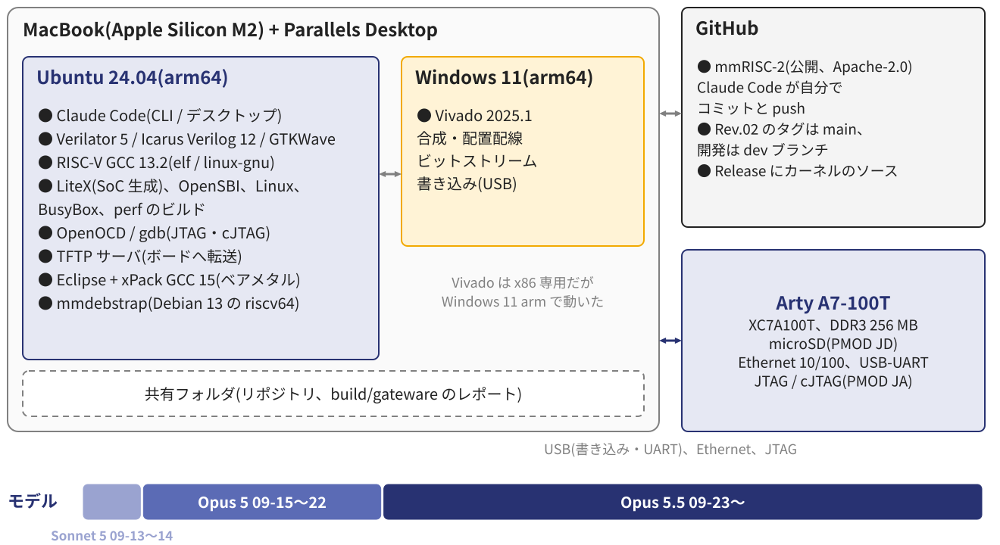
図 1 開発環境とツール、使ったモデルの変遷 Ubuntu(arm64)の上で Claude Code がシミュレーション、ソフトウェアのビルド、文書とリポジトリの管理を回し、Vivado だけを Windows 側で筆者が回す。Vivado のレポートは共有フォルダ経由で Claude Code が読む。モデルは、LiteX と Rocket で環境を作った最初の 2 日が Claude Sonnet 5、自作 CPU に入った 09-15 から Opus 5、09-23 から Opus 5.5 である。
2.4 設計のサイクル
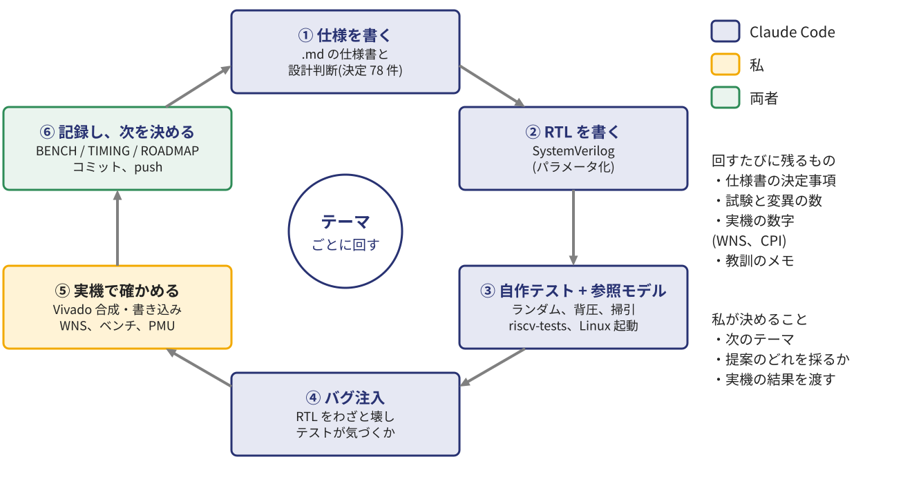
図 2 Claude Code による設計の進め方(テーマごとに回すサイクル) 1 つのテーマ(例: L2 を足す、ストアのミスを待たない)ごとに、仕様 → RTL → 自作テストと参照モデル → バグ注入でテストの検出力を確かめる → 筆者が実機で確かめる → 記録して次のテーマを決める、というサイクルを回した。実機の結果は、次のサイクルの入力になる。
2.5 記録の運用と規模
仕様書を先に書き、実装に合わせて直す (CPU_CORE_SPEC の決定事項 78 件、理由つき)。実機の記録を章ごとに残す (BRINGUP 18 回、TIMING 44 章、BENCH 25 章)。ROADMAP でテーマを管理 し、済んだら印を付ける。文書は日英 2 か国語 (XXXX.md / XXXX_J.md)。教訓は Claude Code のメモに残す (例: 共有フォルダでは make の時刻判定が効かない、バグ注入のログは全行を見る)。会話が縮約されても、文書とメモから続きができる。
規模 数 期間 2026-09-13〜10-12(30 日) コミット 189(git は 09-19 から) 筆者の指示 約 350 回 RTL 46 ファイル、22,084 行 検証 テスト・スクリプト 28,926 行 文書 英 9,777 行 + 日 9,505 行 設計判断 78 件 バグ注入 550 種、すべて検出 API 呼び出し 約 6,400 回 入力トークン 約 29 億(98 % はキャッシュ) 出力トークン 約 760 万(思考などを含む) 契約プラン Claude Pro
トークン量は Claude Code の会話記録から集計した概算である。最初の相談のセッションと会話の要約の分は含まない。入力の大半は、呼び出しのたびに会話の履歴をキャッシュから読み直す分である。
3. 仕様(Rev.01)
3.1 CPU コア
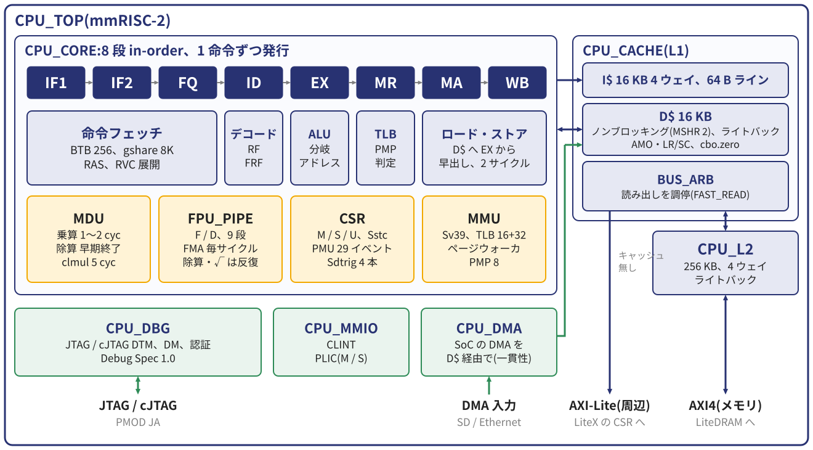
図 3 CPU コアのブロック図 表 3 CPU の主な仕様
項目 仕様 ISA RV64IMAFDC + Zba / Zbb / Zbs / Zbc / Zicond / Zicboz、Zicsr、Zifencei、Zicntr、Zihpm、M / S / U パイプライン 8 段 in-order(IF1 IF2 FQ ID EX MR MA WB)、EX・MR・MA からのフォワーディング 分岐予測 BTB 256、gshare(PHT 8192)、リターンアドレススタック 8、ロードの値による分岐は MR で解決 乗除算 乗算 1〜2 サイクル、除算は早期終了、キャリーなし乗算 5 サイクル 浮動小数点 F / D、9 段のパイプラインで毎サイクル 1 演算(FMA)、除算・平方根は反復 MMU・保護 Sv39、ITLB / DTLB 各 8 エントリ、ハードウェアのページウォーカ、PMP 8 キャッシュ L1 I$ / D$ 各 16 KB(4 ウェイ、64 B)、D$ はノンブロッキング・ライトバック、L2 256 KB 割り込み・特権 CLINT、PLIC(M / S)、Sstc、特権仕様 1.12 デバッグ JTAG / cJTAG(Debug Spec 1.0)、トリガ 4 本(Sdtrig)、認証 性能カウンタ 4 本、26 イベント、Sscofpmf、Smcntrpmf(Linux の perf で使える) FPGA Arty A7-100T、50 MHz、WNS +0.664 ns、LUT 74 %、スライス 86 %、BRAM 108.5 / 135
ロード・ストアは EX から D$ へ早出しし、ヒットは 2 サイクルで毎サイクル 1 アクセスを流す。SoC の DMA も D$ を通すので、Linux が前提とするキャッシュの一貫性をハードウェアで保つ。外部とのインタフェースは、メモリの AXI4、周辺の AXI-Lite、DMA 入力、JTAG / cJTAG である。Linux に必要な機能に加えて、性能のための拡張(Zba / Zbb / Zbc、Zicboz)と、計測のための PMU を後から足した。
3.2 Linux システム
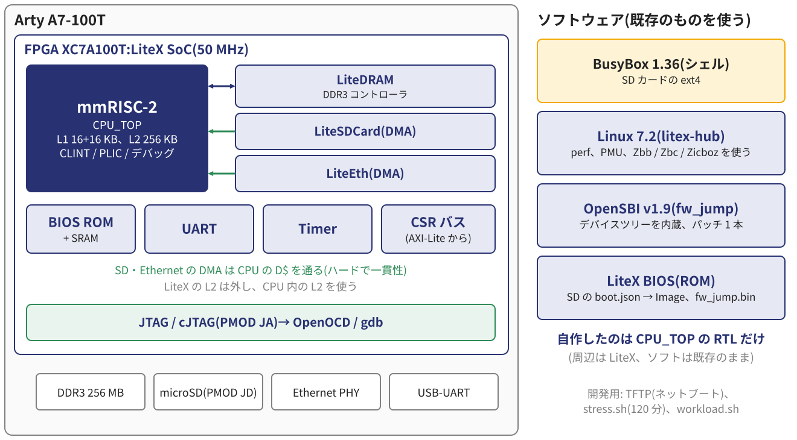
図 4 Linux システムの構成 LiteX が生成する SoC の CPU を mmRISC-2 に差し替えた。最初は Rocket 構成とメモリマップを 1 バイト単位で合わせ、デバイスツリーは CPU のノードだけを書き換えた。その後、LiteX の L2 を外して CPU 内の L2 を使い、DMA を D$ 経由にし、Ethernet を足した。ソフトウェアは LiteX BIOS → OpenSBI v1.9 → Linux 7.2 → BusyBox の順に起動する。
4. 開発の経緯
4.1 最初に手をつけたこと(09-15〜09-20)
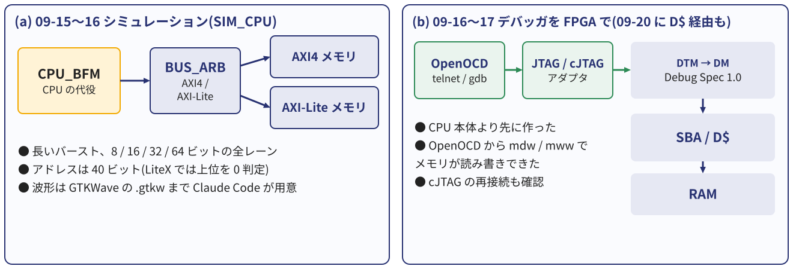
図 5 CPU 本体より先に確かめた、バスとメモリ、デバッガの経路 CPU 本体の前に、バスとメモリ、デバッガの経路 を確かめた。CPU が動かないときに、どこまでが正しいかを切り分けられるからである。デバッガは、公式の Debug Spec の PDF を渡して CPU より先に実装させ、09-17 に FPGA 上で OpenOCD からメモリの読み書きと cJTAG の再接続を確かめた。このデバッガは、後に実機の Linux カーネルにハードウェアブレークポイントを置くのにも使った。その後は「テストベンチから先に作る」を基本とし、キャッシュは参照モデルとランダムの試験を作ってから RTL を書いた。
4.2 日程の実績
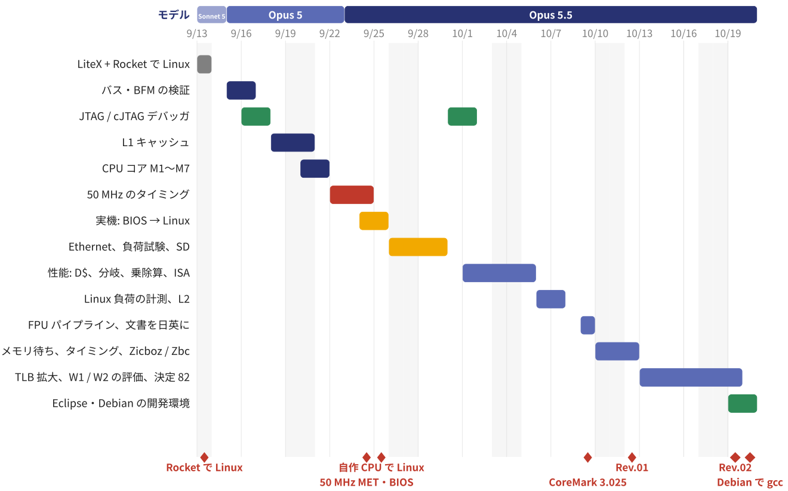
図 6 開発日程の実績と主な出来事 09-20〜21 の 2 日で CPU コア(パイプラインの骨格から LiteX への組み込みまで)を作り、09-22〜24 の 3 日をタイミングに使った。09-24 に実機で BIOS、09-25 に Linux が起動した。10 月に入ってからは性能と計測、10-10〜12 はメモリ待ちとタイミングの残りに取り組んだ。
4.3 主な判断と仕様変更
表 4 主な判断と仕様変更
時期 判断 理由・結果 09-13 LiteX を土台に、まず標準の Rocket で Linux CPU だけ差し替えればよい基準ができた(当日に起動) 09-16 バスはメモリ AXI4 / 周辺 AXI-Lite、アドレス 40 ビット ほかの SoC でも使えるように。LiteX では上位を 0 と判定 09-18 L1 は Rocket 相当(16 KB + 16 KB)、パラメータ化 掃引 19 構成で検証 09-23 50 MHz のためにステージ MR を追加 (7 → 8 段) WNS −20.4 ns → 0.000 ns(09-24) 09-24 SoC の DMA を D$ 経由 に Linux の SD ドライバが前提とする一貫性をハードで保つ 10-02 ロード・ストアを EX から早出し CoreMark 1.895 → 2.211 /MHz 10-06 LiteX の L2 を外し、CPU 内に L2 256 KB カーネルの負荷が 1.2〜1.7 倍に 10-09 FPU をパイプライン化 毎サイクル 1 演算、資源はむしろ減った 10-11 I$ のプリフェッチを作ったが切る 実機で 0〜4 % 遅くなった(5.2 節) 10-12 バスの 2 本目の読み出しは作らず先に測る 効果は 0.26 % と分かり、1 サイクル早い許可(FAST_READ)へ
判断は筆者が最終的に選んだが、案と根拠の多くは Claude Code が出した。後半は「作る前に測る」が定着した。
4.4 性能の推移
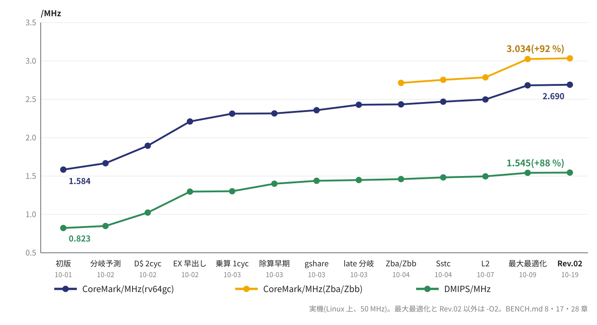
図 7 CoreMark と Dhrystone の推移(実機、Linux 上、50 MHz) 初版(10-01)の 1.584 CoreMark/MHz から、D$ のヒットを 2 サイクルに、ロード・ストアを EX から早出し、乗算を 1 サイクルに、gshare、ロードの値による分岐を MR で解決、Zba / Zbb、L2、最後にコンパイラのオプション、と積み上げて、CoreMark は +91 %、Dhrystone は +87 % になった。
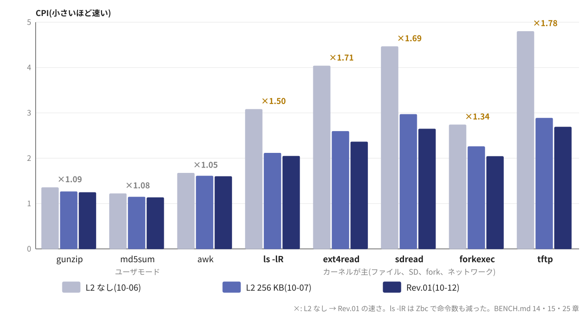
図 8 Linux の実負荷の CPI(PMU で計測、小さいほど速い) CoreMark はキャッシュに収まるため、Linux の実際の負荷を 8 つ選び、PMU で数えた(workload.sh)。カーネルが主の負荷ではキャッシュ待ちがサイクルの 50〜70 % を占めていたので、L2 を入れて 1.2〜1.7 倍にした。その後、ストアのミスを待たない、汚れた追い出しより先に読み込む、cbo.zero、バスの改善で、さらに 7〜11 % 下げた。関数ごとの内訳(perf)を見て、Zbc による CRC の高速化も確かめた。
4.5 FPGA のタイミング(WNS)の推移
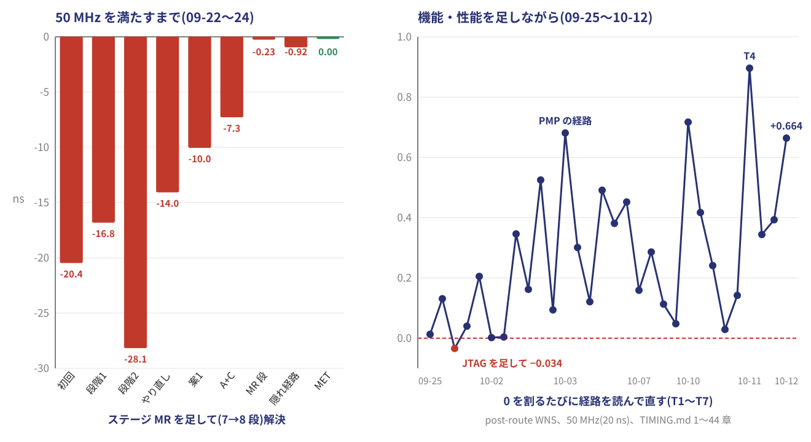
図 9 WNS の推移(配置配線後、50 MHz) 最初の合成は −20.4 ns(約 25 MHz 相当)だった。原因を配線の混雑ではなく論理の段数と見て、経路を読んで切っていった。途中の段階 2 は逆に悪化してやり直し、最後はステージ MR を足して 09-24 に 50 MHz を満たした。その後も機能を足すたびに WNS は 0 付近に戻り、そのたびに最悪経路を読んで直した(T1〜T7)。Rev.01 では +0.664 ns である。
5. 手戻りと検証
AI が間違えた例と、それを何が捕まえたかを 3 つ挙げる。
5.1 手戻り①: 起動時のバナーが「__」で止まった(09-24)
␣␣␣␣␣␣␣␣ __ ▌
␣ = 空白、 ▌ = ここで止まる
最初の実機で、LiteX BIOS のバナーの途中で止まった。送れたのは UART の送信 FIFO の 16 バイト(改行 \n\r の 2 + 太字の制御コード ESC[1m の 4 + 見える 10 文字)である。CPU は動いていて、止まっていたのは割り込み だった。
原因 : キャッシュ無しのアクセスでアドレスを 8 バイトに丸めていた 。PLIC の +4 番地への書き込みが「下半分・ストローブ無し」になって消え、割り込みが来ない。UART の送信は 16 バイトの FIFO を超えると割り込み待ちになる。なぜ見逃したか : シミュレーションのメモリモデルはバイト単位でアドレスを受け、SoC のテストは外部割り込みを 0 に固めていた。本物の BIOS を割り込み込みで走らせたことがなかった 。何で捕まえたか : 本物の bios.bin と UART のモデルを載せた SIM_BIOS を作り、直す前の RTL が同じところで止まることを再現してから直した。SIM_BIOS はその後、Linux の起動まで回す回帰試験になった。
翌日には、satp を書いた後に命令を取り直さない不具合(MMU を S モードで有効にする手順)も見つかった。どちらも「実機で初めて通る道」だった。
5.2 手戻り②: 実機では遅くなったプリフェッチ(10-11)
I$ の次ラインのプリフェッチを入れると、Linux の起動のシミュレーションで CPI が −1.1 %、プリフェッチの 48 % がミスを救った。
しかし実機では 0〜4 % 遅くなった 。使われないプリフェッチのバーストの後ろで、本当のミスが待っていた。
原因 : シミュレーションのメモリは即答し、実機の DDR3 は数十サイクルかかる。対策 : シミュレーションにメモリの遅れのモデル (読み 20、書き 10 サイクル)を入れると、シミュレーションでも +1.2 % と実機と同じ判定になった。
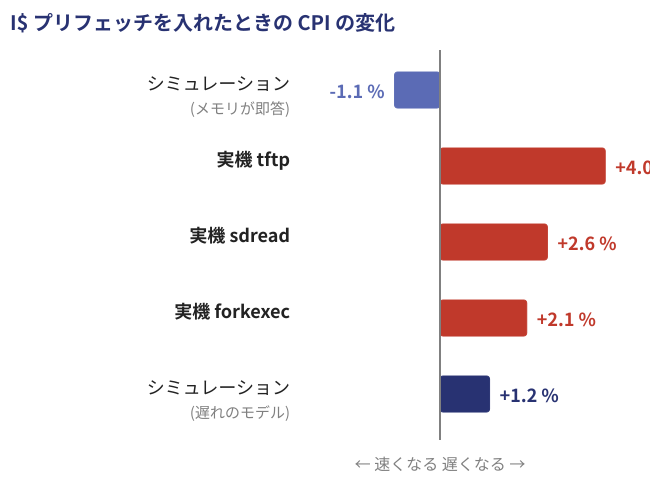
図 10 プリフェッチを入れたときの CPI の変化
プリフェッチは切り、以後は作る前に測る ようにした。例えば、バスに 2 本目の読み出しを受けさせる改造は、効果が 0.26 % しかないと先に分かったので作らなかった。AI はシミュレーションの前提(メモリが即答)を疑わずに「速くなった」と報告した。実機の数字が、前提の誤りを教えた 。
5.3 手戻り③: AI の報告の誤りと、環境の罠
報告の誤り(10-12)
Zicboz を入れたとき、キャッシュのバグ注入を「59 / 59 検出」と報告してコミットした。
実際は 56 / 59。名前の変更で 3 つの変異が当たらなくなっていた。
ログの最後の 3 行だけを見て要約していた。次の変更の検証で自分で気づき、訂正した。
→ 規則をメモに残した: 「NOT DETECTED / NOT APPLIED を全行出して、数を突き合わせる」。
環境の罠(09-21、10-05)
SD カードに書いたファイルが、差し直すと消えていた。原因は macOS が、VM に渡す前にマウントしていた古い FAT を、カードが戻ったときに書き戻していたこと。Claude Code が FAT のタイムスタンプから順番を割り出した。→ 「第 1 パーティションは Mac から書く」を手順とメモに。
共有フォルダはファイルの時刻が 1 秒単位のため、直した RTL を make が「変更なし」と見なし、古いシミュレータで試験していた。→ ソースのハッシュで判定する形に直した。
AI の誤りは「もっともらしい要約」に出る。生のログを見る規則で防げる。環境の罠は人の手元にあり、AI は記録から原因を推理できる。
5.4 検証方法の進化
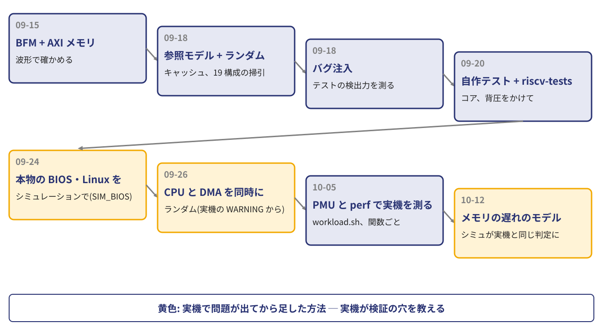
図 11 検証方法の進化(黄色は実機で問題が出てから足した方法) 実機で止まるたびに、それを再現できるシミュレーションを先に作ってから直した。実機が、検証の穴を教えてくれる。
5.5 最終の検証結果(Rev.01)
表 5 最終の検証結果
環境 内容 結果 SIM_CORE 自作試験 34 本(命令、トラップ、MMU、PMP、デバッグ、PMU ほか)、背圧あり 全 PASS riscv-tests 公式(rv64ui/um/ua/uc/uf/ud/uzba/uzbb/uzbs/uzbc/uzicond/mi/si) p 178 / v 154 PASS SIM_SYS コア + 本物の L1 / L2 + DMA、自作 27 本 + riscv-tests 全 PASS SIM_CACHE CPU と DMA を同時にランダム、21 節、掃引 19 構成 64,914 チェック PASS SIM_L2 / MMU / FPU L2 約 150 万、PMP 20 万、FPU(SoftFloat と比較)約 130 万 PASS SIM_BIOS 本物の LiteX BIOS、SD カードモデルから Linux 起動、perf プロンプトまで SIM_OCD OpenOCD との協調シミュレーション(ブレーク、ウォッチ) PASS バグ注入 CORE 339、CACHE 59、SYS 23、L2 31、MMU 21、FPU 62、DBG 15 550 種すべて検出 実機 Linux 起動、Ethernet、120 分の負荷試験(メモリ・ネット・SD を同時に照合) PASS
riscv-tests の失敗 4 本は、実装していない機能(ハードウェアのミスアラインアクセス、Zacas)を求めるものである。
5.6 実機の動作
__ _ __ _ __
/ / (_) /____ | |/_/
/ /__/ / __/ -_)> <
/____/_/\__/\__/_/|_|
Build your hardware, easily!
Memtest OK Write 40.7MiB/s Read 41.9MiB/s
Booting from boot.json...
OpenSBI v1.9
Platform Name : mmRISC-2 on Digilent Arty A7-100T
[0.000000] Booting Linux on hartid 0
[0.000000] Linux version 7.2.0-rc2 (riscv64 gcc 13)
[0.000000] riscv: base ISA extensions acdfim
[0.159648] Memory: 239032K/262144K available
[2.608766] liteeth 12001000.ethernet eth0
[3.350734] EXT4-fs (mmcblk0p2): mounted r/w
[3.438492] Run /sbin/init as init process
udhcpc: lease of 192.168.0.9 obtained
#
カーネルの起動から 3.4 秒で init、DHCP、TFTP
perf(関数名つき)、gdb で実行中のカーネルにハードウェアブレーク
120 分の負荷試験 PASS(Rev.01: mem 81、net 41、sd 517、NG 0)
図 12 Arty A7-100T と JTAG デバッガ(上の緑の基板)
6. Claude Code による自動設計の評価
6.1 利点と課題
利点(Pros) 課題(Cons) 速い : 12 日で自作 CPU に Linux、30 日で性能 +91 %実機は人が要る : Vivado、ボード、SD カード、観察仕様・RTL・検証・文書を一貫して書き、保ち続ける (日英) 前提が違っても、もっともらしく進む (即答するメモリで「速くなった」)検証が厚い : 参照モデル、ランダム、掃引、バグ注入 550 種を自分で作って回す報告を誤ることがある (56 / 59 を 59 / 59 と報告)実機の数字を読む : タイミングレポートや PMU から原因と次の手を出す環境の罠に弱い (共有フォルダの時刻、Mac のマウント)公開の仕様書(PDF)を読んで実装する 長い会話は縮約される: 文書とメモに残すことが前提 夜中でも回し続け、記録を残す 何を作るか、どこで止めるかは人が決める GitHub へ自律的にコミット・push → 確実に履歴が残る
課題の多くは、人が実機で確かめ、AI に生の数字を渡すことで補える。
6.2 人がやること・うまく使うコツ
目標と制約をはっきり言う : 「CPU だけ自作、周辺と Linux は既存」。迷ったら案を出させ、比べさせてから選ぶ : 土台、バスの幅、キャッシュの構成。作る前に測らせる : メモリ待ちの内訳を数えてから、手を付ける順番を決めた。シミュレーションと実機の両方で確かめる : 食い違いは検証の穴として埋める。数字で報告させ、生のログを見る 。決めたことと教訓を文書とメモに残させる : 次のセッションが続きから始められる。テーマ単位で区切り、きりのよいところでコミット する。一次資料を渡す : RISC-V の仕様書 PDF、実機のログ、レポート。
リアルな開発チームの技術マネージャのように振る舞う
詳細の内容まではチェックできなくても、担当者(Claude Code)がどのように考え、どのように確認と検証を進めようとしているのかをインタビューして、設計品質を確かめていく。それと同じことをする。RTL の 1 行 1 行は読めなくても、どう考え、どう確かめたかを聞けば、品質は見える。
7. まとめと今後
7.1 まとめ
Claude Code で RV64GC の CPU を設計し、12 日で Arty A7-100T の Linux を起動 した。
30 日で Rev.01 : L2、FPU パイプライン、Zbc / Zicboz、CoreMark 3.0 /MHz、WNS +0.664 ns、120 分の負荷試験 PASS。
人の役割は、目標と判断、実機、そして AI の報告を確かめること である。
7.2 次のテーマ(ROADMAP)
Rev.01 のタグは main に置き、開発は dev ブランチで続ける。実機の負荷を関数ごとに測った結果から、次の順で進める。
2 段目の TLB : ユーザモードの負荷では、ページテーブルの探索がサイクルの 10〜13 % を占める。ライン全体を書くときは読まない (write-validate): カーネルのユーザ空間へのコピーで、コピー先のラインの読み込みを省く。キャッシュ無しのストアを待たない (posted store): ドライバの書き込み(例: Ethernet の送信)。
7.3 次の構想: mmRISC-3(仮称)
同じ Arty A7-100T で、RV64GC の dual-issue / out-of-order コアに Linux を載せられるかを机上で検討している(まだ設計はしない)。
見通し
資源の再配分の設計になる : スライスはすでに 86 %。L2 を縮め、LUT から BRAM・LUTRAM・DSP へ移す。目安: FPGA 向け OoO の NaxRiscv RV64 は、コアで約 18k LUT(FPU・Zb 系なし)。
50 MHz に据え置き 、段数を減らして資源を節約する。最大の分かれ目は FPU の扱い (専用リネーム / 整数と統合 / 縮小)。
mmRISC-2 から分かっていること
ミスしたロードの値は 1〜2 命令後に使われる → 複数のミスを同時に出せる D$・L2 が前提 (いまのバスは読み出しを 1 本ずつ)。
Linux の急所は副作用を投機させない こと: MMIO のロード、CSR、AMO、例外、デバッグ、トリガはコミット時に。
期待: CoreMark は約 1.6 倍が天井、カーネルの負荷は 1.2〜1.4 倍。
進め方は、資源の内訳を測る → NaxRiscv RV64 を Arty で実測 → 1-wide OoO で Linux を起動 → 2-wide に → 投機ロードとミスの多重化 → FPU と予測器、の順とする。検証は、これまでの参照モデル・バグ注入・SIM_BIOS を引き継ぎ、コミット時に Spike と突き合わせる仕組みを最初から入れる。収まらなければ、デュアルイシューの in-order か、1-wide OoO で止める。
付録 A. 筆者紹介
圓山 宗智 (京都市左京区出身)
1986 年、日立製作所に入社し、SH マイコンの開発に従事。以降、ルネサステクノロジ、ベンチャー企業、大手半導体メーカにて、画像処理用 SoC や各種マイコンおよび関連半導体デバイスの開発を統括。現在もマイコン製品設計に取り組んでいる。1978 年からマイコン・FPGA・GPU と戯れ、2000 年からマイコンを絡めた雑誌記事(約 100 本)と書籍を執筆している。
主な雑誌記事
ARM ベース・システム LSI 開発の事例研究、Design Wave Magazine 2006 年 5 月号、CQ 出版社
ARM 汎用プロセッサで使える汎用 JTAG デバッガを自作する、Design Wave Magazine 2008 年 6 月号、CQ 出版社
並列処理プロセッサ xCORE 徹底研究、インターフェース 2014 年 11 月号〜2015 年 6 月号(連載)、CQ 出版社
C で直叩き！超並列コンピュータ GPU 全速力、トランジスタ技術 2019 年 9 月号(特集)、CQ 出版社
世界最初のマイクロプロセッサ 4004 を自作してみた、I/O 2025 年 11 月号、工学社
書籍
今すぐ使える H8 マイコン基板(初版 2010 年、増補版 2011 年)、CQ 出版社
2 枚入り小型 ARM マイコン基板(2011 年)、CQ 出版社
ARM PSoC で作る My スペシャル・マイコン 基板付き(2013 年)、CQ 出版社
ARM PSoC で作る My スペシャル・マイコン 開発編(2013 年)、CQ 出版社
SH マイコン活用記事全集(2014 年)、CQ 出版社
FPGA 電子工作スーパキット(2016 年)、CQ 出版社
MAX10 実験キットで学ぶ FPGA＆コンピュータ(2016 年)、CQ 出版社
完全版 FPGA 電子工作オールインワン・キット(2016 年)、CQ 出版社
付録 B. 参考資料
mmRISC-2(本プロジェクト、Apache-2.0): https://github.com/munetomo-maruyama/mmRISC-2 — 仕様書(CPU_CORE_SPEC、CPU_CACHE_SPEC、CPU_L2_SPEC、CPU_DBG_SPEC)、実機の記録(BRINGUP、TIMING、BENCH)、ROADMAP
Claude Code: https://claude.com/claude-code
LiteX(SoC ビルダ)と LiteDRAM・LiteEth・LiteSDCard: https://github.com/enjoy-digital/litex 、https://github.com/litex-hub
The RISC-V Instruction Set Manual, Volume I / II(20260120)、The RISC-V Debug Specification 1.0: https://github.com/riscv
OpenSBI: https://github.com/riscv-software-src/opensbi 、riscv-tests: https://github.com/riscv-software-src/riscv-tests
Arty A7 Reference Manual: https://digilent.com/reference/programmable-logic/arty-a7/start
NaxRiscv: https://github.com/SpinalHDL/NaxRiscv
本書の数値は 2026-10-12 時点の mmRISC-2 Rev.01 のものである。本書の文章と図も、筆者の指示のもとで Claude Code が作成した。英語版は Doc/20261015_WhitePaper_mmRISC-2.pdf にある。